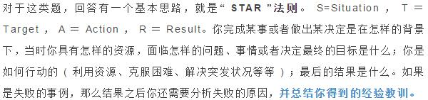

1 | 提前准备： |
自我介绍
Question: 1
1 | > 请你用三分钟时间做一个简单的自我介绍? |
考察项： 执行力 理解力 换位思考 意识倾向
1. 执行力、理解力
是否听清面试官的要求，主要看应聘者是否有反应，要控制在面试官要求的时间范围内，如果没有把握，可以征询面试官是否要计时。
2. 换位思考
不要对简历照念，复述型的自我介绍不好，好的自我介绍要回答我为什么应聘该岗位，我为什么适合该岗位。我喜欢要先说对公司和岗位的理解，我适合要说我的特长和能力。与公司和岗位要求恰恰是相符合的。
4. 意识倾向
1 | > 答一：“我有很强的思维能力、学习能力、计划能力...” |
回答提示:
不要照着简历念,企业想知道能否胜任工作.需要包括最强的技能,最深入研究的知识领域,个性中最积极的部分,做过的最成功的事,主要的成就等,这些都可以和学习无关,也可以和学习有关,但要突出积极的个性和做事的能力,说得合情合理HR才会相信.HR很注重一个人的礼貌,求职者要尊重面试官,在回答每个问题之后都说一句”谢谢”,有礼貌的求职者人人都喜欢.
网申开放题怎么答？
1 | > 开放题侧重考察个人的合作能力和技巧，工作的抗压能力，是否有不利于工作和团队发展的一些问题等。 |
Question 1: 价值观
你做的最成功/最失败的一件事是什么？让你感到最有成就感的是什么？让你感到最遗憾的一件事是什么？
这类问题，HR主要考察的你的价值观导向，在你眼里什么是最重要；对你来说，什么才算成功。
我收集了几点通常的做法：

Question 2: 未来规划
谈谈你的职业规划？
这类问题，HR希望挖掘你应聘的深层次动机，看你是否具有职业稳定性。
Question 3: 学习能力
谈谈你是怎样学习(前端 or 后端)的?
这类问题就谈你从多种渠道，全方位，立体式的挖掘你对某一领域的研究成果或方式，展现你的浓厚的兴趣和强烈的好奇心，回答越具体越好。
请问你最近在看什么书？
Question 4: 解决问题能力
说说你曾经面对过哪些困难，你是如何解决的？举一个令你印象最深的一个。
1 | > 尽管HR问的是困难经历，但是HR在意的并不是结果，而是想了解应聘者在这次经历中学到的一些东西，吸取了什么教训，从而考察其学习能力和应变能力及抗压能力。在面试中类似的问题还有“你最自豪的一件事” “你在学习和工作中最难忘的一件事” “谈谈你的一次失败经历”等。 |
举例
我: 我曾经作为某某活动的负责人{组织者、发起人等等}组织了某某活动{参加某某比赛实践项目}，期间我做了很多努力{比如}但是由于一些原因{自己的原因}，最终没能达到预期的效果。虽然结果令人遗憾，但是我从中认识到了不足，也积累了经验，汲取的教训，谈谈自己的收获。最后，我认为失败是在所难免的，有时候失败比成功更能促进人的进步，经过我的锻炼和学习，我相信如果再经历相关的实践工作，我一定会做的更好！
Question 5: 性格测验
请问在你同学和老师眼中你分别是一个什么样的人？
1 | > 角色丰富的人，在同学眼中与在老师眼中的自己是不一样的。找准定位，角色丰富的人知道什么场景下自己就应该表现什么行为，见到什么人应该说什么话，会有比较良好的人际关系。而这一点，对于有些人很简单做的，而对于另一拨人则不容易，楼主恰恰属于后者。再描述一下自己在不同人眼中的共性，就更完美了，说明自己的换位思考能力比较强，能站在对方的立场，角色感比较强，不是一个没有原则，见风使舵，两面三刀的人。 |
Question5: 思维独立
你最崇拜或你最敬仰的人是谁？
Question6: 自我接纳
在上一份实习中，你收获了什么，学到了什么？
Question7: 执行力、自我明示性
请介绍一下你的优缺点？
1 | > 好的回答：我个人理解的优缺点不是绝对的，都需要背景和假设前提来衬托的，我来说说我的特点吧，我做事认真，在出错率低方面是个优点，在效率方面是个缺点，我已经意识到自己的这个问题了，正在努力在要求不是那么细致的工作上提高效率。企业喜欢求职者从自己的优点说起,中间加一些小缺点,最后把问题转回到优点上,突出优点部分,企业喜欢聪明的求职者. 侧重个性方面的优点: 沉着冷静,条理清楚,立场坚定,顽强向上,乐于助人和关心他人,适应能力和幽默感,乐观和友爱等,结合自己的亲身经历,举例描述自己的优点. |
你对加班的看法？
你对跳槽的看法?
1 | > 正常的"跳槽"能促进人才的合理流动,应该支持. |
工作中难以和同事,上司相处,你该怎么办?
1 | > 我会服从领导的指挥,配合好同事的工作. |
你如何对待别人的批评?
1 | > 我会接受建设性的批评 |